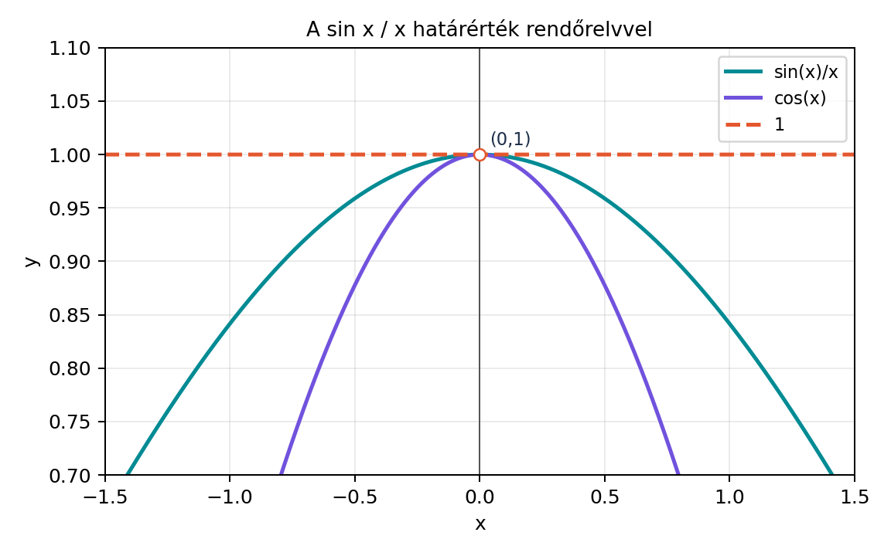

8.2 Határérték-szabályok és
nevezetes határértékek
8.2.1 Motiváció
A sorozatoknál már használtuk, hogy a határérték jól viselkedik a
műveletekkel: összeg, szorzat, hányados határértéke a határértékekből
kiszámítható. A függvényhatárértéknél ugyanezekre a szabályokra van
szükség, különben minden egyes határértéket az ε–δ definícióval kellene
visszavezetni. Ebben az alfejezetben a A függvény
határértéke: Heine- és Cauchy-féle definíció alfejezetben megismert
Heine-elve segítségével a sorozatoknál már
bebizonyított szabályokat átvisszük függvényekre, majd bebizonyítjuk a
kalkulus legfontosabb nevezetes határértékeit:
Ezek a határértékek a későbbi deriválási szabályokban,
Taylor-sorokban és fizikai közelítésekben is újra megjelennek.
8.2.2 Szemléletes kép
Nézzük meg először a
értékét kis
-ekre:
(radián)
A táblázat azt sugallja, hogy a hányados
-hez
tart, pedig
,
tehát a
alakú kifejezés elsőre „határozatlan”. A következő ábra a rendőrelv
lényegét mutatja: kis
-ekre
,
és
.

A sin x / x határérték rendőrelvvel - A
sin(x)/x görbe (felirattal) a cos(x) görbe és a szaggatott y = 1 egyenes
közé esik pozitív x-re, ezért a határérték 1. Az x=0 pontban a sin(x)/x
nincs értelmezve, ezért ott üres karika szerepel.
Az ábrán látható, hogy a két szorító függvény,
és
,
ugyanahhoz az
értékhez tart, így a közrefogott
is
-hez
kell tartson.
8.2.3 A műveleti szabályok és a
rendőrelv függvényekre
A Heine-elv azt mondja ki, hogy
pontosan akkor teljesül, ha minden olyan
,
sorozatra, amelyre
értelmezve van,
.
Ezért a sorozatoknál tanult szabályok szinte szó szerint átvihetők.
Tétel. (Határérték-műveletek) Legyen
és tegyük fel, hogy
ahol
.
Ekkor:
;
minden
-re;
;
ha
,
akkor
egy alkalmas környezetében
,
és
ha
egy környezetében
,
akkor
.
Bizonyítás. Az állítások a sorozat-határértékek
műveleti szabályainak közvetlen következményei a Heine-elven keresztül.
Például az összeg esetén legyen
,
tetszőleges sorozat. Ekkor a feltétel szerint
és
.
A Határérték-műveletek és a rendőrelv alfejezet
sorozatokra vonatkozó összegszabályából
Mivel ez minden ilyen
sorozatra igaz, a Heine-elv megfordítása miatt
.
A többi művelet ugyanígy igazolható. A hányadosnál a
feltétel miatt a sorozat-hányados szabályt alkalmazhatjuk, és a
feltétel is teljesül egy környezetben, különben a hányadosfüggvény nem
lenne értelmezve. ∎
Tétel. (Rendőrelv függvényekre) Ha
egy környezetében
és
akkor
.
Bizonyítás. Legyen
,
tetszőleges. Ekkor elég nagy
-re
,
továbbá
és
.
A sorozatokra vonatkozó rendőrelv szerint
.
Újra a Heine-elv miatt
.
∎
8.2.4 Összetett függvény
határértéke
A helyettesítéses módszernél gyakran írunk át egy határértéket
új változóval. Ehhez pontos feltétel kell, mert az összetett függvény
határértéke nem mindig viselkedik „naivan”.
Tétel. (Összetett függvény határértéke) Tegyük fel,
hogy
Ha vagy
,
vagy pedig
egy környezetében
(esetleg
-t
kivéve), akkor
Bizonyítási terv. A Heine-elve alapján vegyünk egy
tetszőleges
,
sorozatot. Ekkor
.
Ha
elég nagy
-re,
akkor az
sorozat olyan, hogy
és
,
így
.
Ha
felveheti
-t,
de
,
akkor ezeken a helyeken is
,
tehát ugyanúgy
.
Részletezés. Legyen
,
.
A feltétel szerint
.
Ha a
feltétel teljesül, akkor véges sok kivétellel
,
tehát az
sorozatra alkalmazhatjuk az
határértékére vonatkozó Heine-feltételt:
.
Ha viszont
,
akkor azokra az indexekre, ahol
,
,
a többi indexre pedig az előző gondolat működik. Ezért minden
sorozat mentén
,
tehát a Heine-elv szerint
.
∎
Ellenpélda. A
feltételre azért van szükség, mert a külső függvény
-ben
felvehet a határértéktől eltérő értéket. Legyen
Ekkor
és
,
de
a
-hoz
konvergáló
sorozat mentén is. Így
,
miközben más sorozatok mentén
a függvényérték, tehát
nem létezik. Itt
,
és a
feltétel nem teljesül a
egyetlen környezetében sem.
8.2.5 A
határérték geometriai bizonyítása
A következő tétel a trigonometrikus függvények deriválásának
alapja.
Tétel.
Bizonyítási terv. Az
esetet egy egységkörben felírt terület-összehasonlítással kezeljük: két
háromszög közé szorítjuk a körcikk területét. Ebből a
becslést kapjuk, majd a rendőrelvet alkalmazzuk. A negatív
-ekre
az állítás a párosságból következik.
Részletezés. Legyen
.
Tekintsük az egységsugarú kört. Legyen
,
,
,
és legyen
az
-beli
függőleges érintő és az
egyenes metszéspontja, tehát
.
Az alábbi ábrán az
háromszög benne van az
körcikkben, a körcikk pedig az
háromszögben;
-nál
a három terület
,
és
.
Statikus változat (mint a PDF-ben)
az egységkörön,
;
számított értékek
Az
háromszög területe az
alap és a
magasság alapján:
Az
körcikk területe radiánban:
Az
háromszög területe:
A háromszög benne van a körcikkben, a körcikk pedig benne van a
nagyobb háromszögben, ezért
Osszunk a pozitív
-szel:
A pozitív kifejezések reciprokát véve az egyenlőtlenség iránya
megfordul:
Most megmutatjuk, hogy
,
amikor
.
A fenti egyenlőtlenségből
,
ezért
.
A
becslés felhasználásával
Mivel
is teljesül, a rendőrelv szerint
.
Így a
egyenlőtlenségből a rendőrelvvel kapjuk:
Ha
,
akkor
,
,
és
tehát a bal oldali határérték is
.
∎
Figyelem. A bizonyításban lényeges, hogy a szög
radiánban van. Ha fokban mérnénk, a körcikk területe
nem
lenne, ezért a határérték nem
,
hanem
lenne.
Következmény.
Bizonyítás.
∎
Következmény.
Bizonyítás. A félszög-képlettel
.
Ezért
Ha
,
akkor
,
ezért a
határérték és az összetett függvény határértékére vonatkozó tétel miatt
az egész kifejezés
.
∎
8.2.6 Az
-t
és az exponenciális/logaritmikus határértékeket megalapozó
határértékek
A Monoton korlátos sorozatok és az e szám
alfejezetben beláttuk, hogy az
sorozat konvergens, és határértékét
-vel
jelöltük. Most kiterjesztjük ezt valós
-re.
Tétel.
Bizonyítási terv. A valós
-et
a
egészrésszel két egész szám közé szorítjuk, így a kifejezést az ismert
sorozatból készített alsó és felső korlát közé zárjuk. A rendőrelv miatt
a valós
-re
vett határérték is
.
Részletezés
esetén. Legyen
,
és írjuk
jelölést az
alsó egészrészére. Ekkor
Az
egyenlőtlenség miatt
,
tehát
Mivel a kitevő is legfeljebb
,
Az alsó becsléshez használjuk az
egyenlőtlenséget, amiből
,
tehát
Mivel
,
A két szorító kifejezés ugyanahhoz az
-hez
tart, ezért a rendőrelv szerint a közrefogott
is
-hez
tart.
Az
eset. Legyen
,
ahol
.
Ekkor
Az
helyettesítéssel
∎
A
-ban
vett párját helyettesítéssel kapjuk.
Következmény.
Bizonyítás. Először legyen
,
és vezessük be a
új változót. Ekkor
,
és
Ha
,
akkor
,
és ugyanaz a képlet a
-ben
vett határértékkel ad
-t.
Így a kétoldali határérték is
.
∎
Ebből következik a logaritmusfüggvény egyik alapvető határértéke.
Tétel.
Bizonyítás. A logaritmus azonossága szerint
Az imént beláttuk, hogy
.
A természetes logaritmus
-ben
folytonos, ezért az összetett függvény határértéke szerint
A folytonosság általános tárgyalása a A
folytonosság és a szakadások típusai alfejezetben következik; itt az
elemi függvények ezen alapvető tulajdonságát használjuk. ∎
Következmény.
Bizonyítás. Legyen
.
Az exponenciális függvény folytonossága miatt
,
amikor
,
és
esetén
.
Továbbá
.
Így
A
határérték miatt a reciprok is
-hez
tart. ∎
Következmény. Minden
-re
,
speciálisan
.
Bizonyítás. A
eset triviális (az érték
).
Ha
,
legyen
;
ekkor
,
ha
,
és
,
ha
.
Így
A szögletes zárójelben álló kifejezés a fenti két határérték szerint
-hez
tart (mindkét irányban), a
hatványfüggvény pedig az
pontban folytonos, ezért a kifejezés
-hez
tart. A sorozatos alak a Heine-elvből következik. ∎
Azonosítsd a kifejezést. Írd fel a határértéket, és
nézd meg, milyen „határozatlan alakkal” van dolgod:
,
,
,
stb.
Alkalmazz műveleti szabályokat, ha lehet. Ha a
nevező nem tart nullához, és a számláló is konvergens, a hányadosszabály
közvetlenül alkalmazható.
Keress nevezetes határértéket. Alakítsd át a
kifejezést úgy, hogy megjelenjen valamelyik minta:
Vezess be új változót. Legyen
,
amelyre
,
amikor
.
Ellenőrizd az összetett függvény határértékének feltételét:
egy környezetben, vagy a külső függvény értéke a kérdéses pontban is a
határérték.
Bővíts vagy emelj ki állandókat. Például
.
Szorítsd közre, ha kell. Ha az egyszerű szabályok
nem elegendők, keresd meg a kifejezés alsó és felső korlátját, és
alkalmazd a rendőrelvet.
Ellenőrizz. Helyettesíts be egy kis, illetve nagy
számot, és nézd meg, hogy a kapott érték hihető-e.
8.2.9 Valós életbeli alkalmazás:
kis szögű közelítés az ingánál és látószögnél
A
határérték közvetlen fizikai tartalma az, hogy kis
szögekre
,
pontosabban
Ez a kis szögű közelítés például az inga mozgásánál
használható. Egy
hosszúságú,
szögkitérésű matematikai inga érintőirányú gyorsulása
Radiánban kis
-ra
,
így
Az íven mért kitérés
,
ezért
ami harmonikus rezgőmozgás. Ennek periódusideje
Legyen például
és
.
Ekkor
A közelítés hibája a szöggel nő.
esetén radiánban
,
,
tehát a relatív hiba
Ez a legtöbb iskolai ingakísérletben elhanyagolható.
esetén
,
,
így a relatív hiba már körülbelül
,
és a pontos periódus is észrevehetően eltér a fenti képlettől.
Hasonló közelítés lép fel a látószög kiszámításánál.
Ha egy
magasságú tárgyat
távolságból nézünk, akkor a látószög
Kis szögekre
.
Például egy
magas torony
távolságból:
A relatív eltérés kb.
,
tehát gyakorlati becslésre a lineáris közelítés kiváló. A modell
korlátja világos: nagyobb szögeknél, például
-nál,
a
típusú közelítések már használhatatlanok, ezért a pontos trigonometrikus
összefüggést kell megtartani.
8.2.10 Tipikus hibák
A
és a függvényérték keverése. Sokan azt gondolják, hogy
határértéke
-ban
azért
,
mert
„”.
Ez hibás: a
nem szám, és a függvény a
-ban
nincs is értelmezve. Helyesen: a határértéket a
környezetéből vett, de
-tól
különböző
-ekkel
vizsgáljuk, és a rendőrelv adja az
-et.
A radián elfelejtése. A
csak radiánban igaz. Fokban számolva az érték
.
Ha egy feladat fokban adja a szöget, először át kell váltani
radiánba.
Az összetett függvény feltételeinek
elhanyagolása. Gyakori hiba, hogy a tanuló automatikusan
behelyettesít
-et,
és nem ellenőrzi, hogy a belső függvény nem veszi-e fel végtelen sokszor
a határértékét. A fenti ellenpélda
(
a
-ban
,
)
mutatja, hogy ez valódi feltétel: ha
„túl gyakran” egyenlő a
határértékkel, akkor az összetett függvény határértéke nem feltétlenül
létezik.
Műveleti szabály alkalmazása
esetén. A hányadosszabályt nem szabad használni, ha a nevező
határértéke
.
Ehelyett a törtet át kell alakítani, bővíteni kell, vagy nevezetes
határértékre kell visszavezetni.
A függvény és a sorozat jelölés összekeverése. A
rendőrelvnél azt állítjuk, hogy ha
,
és a két szélső határértéke
,
akkor a középsőé is
.
Ez nem azt jelenti, hogy a középső függvénynek létezik határértéke
pusztán az egyenlőtlenség miatt; a szélső függvények konvergenciája is
szükséges.
8.2.11 Önellenőrzés
Igaz-e, hogy ha
az
egy környezetében és
,
akkor
is létezik? Indokold.
Számítsd ki:
.
Számítsd ki:
.
Számítsd ki:
.
Miért van szükség a
feltételre az összetett függvény határértékénél?
8.2.12 Feladatok
1. feladat (A). Számítsd ki:
2. feladat (A). Számítsd ki:
3. feladat (B). Számítsd ki:
4. feladat (B). Számítsd ki:
5. feladat (C). Bizonyítsd a rendőrelvvel, hogy
6. feladat (D). Egy inga nyugalmi helyzetből
-os
szögkitéréssel indul. A
lineáris közelítés hány százalékos relatív hibát ad a visszatérítő
erőben? Radiánban
,
.
Értelmezd, miért elegendő ez a közelítés kis kitéréseknél.
8.2.13 Megoldások
8.2.13.1 Önellenőrzés –
válaszok
Nem. Az alsó korlát önmagában nem biztosítja a határérték
létezését. Például
és
esetén
(),
,
de
-nek
nincs határértéke
-ban
(az
mentén
,
az
mentén
).
Mert ha a belső függvény a határértékét túl gyakran felveszi, a
külső függvény az adott pontbeli értéke eltérhet a határértéktől, és ez
elronthatja az összetett függvény konvergenciáját. A
feltétel biztosítja, hogy a külső függvényt csak a
-től
különböző pontokban kelljen kiértékelni.
8.2.13.2 Feladatok megoldása
1. feladat.
Ellenőrzés numerikusan:
-nél
,
ezért a tört
,
ami
közelében van.
2. feladat.
Mivel
és
,
a határérték
.
3. feladat. Írjuk át a törtet:
A számláló:
A nevező:
Ezért a hányados határértéke:
4. feladat. Legyen
,
ekkor
.
Így
Közelítőleg
.
5. feladat. Minden
-ra
Ebből
Mivel
és
,
a rendőrelv szerint
6. feladat. A visszatérítő erő a
-val
arányos. A lineáris közelítés
.
-nál
radiánban
,
míg
.
A relatív hiba:
Ez azt jelenti, hogy a
helyett
-t
használva a visszatérítő erőben körülbelül
hibát követünk el. Kis kitéréseknél ez azért elfogadható, mert a
nemlineáris inga pontos megoldása is csak másodrendű tagokban tér el a
lineáris modelltől; a mérési bizonytalanság és a légellenállás gyakran
nagyobb hatású.
8.2.14 Rövid összefoglaló
Ebben az alfejezetben a sorozatoknál tanult határérték-szabályokat a
Heine-elv segítségével függvényekre vittük át. Ha
és
,
akkor az összeg, a konstansszoros, a szorzat határértéke rendre
,
,
;
ha
,
akkor a hányadosé
.
Ha egy függvényt két másik közrefog, és a két szélső függvény ugyanahhoz
az
-hez
tart, akkor a középső függvény határértéke is
(rendőrelv).
Az összetett függvény határértékére vonatkozó tétel kimondja: ha
és
,
továbbá vagy
,
vagy
az
egy környezetében, akkor
.
Ellenpéldával megmutattuk, hogy ha egyik feltétel sem teljesül (a belső
függvény a
minden környezetében felveszi a
értéket, és
),
az összetett függvény határértéke nem feltétlenül létezik.
A nevezetes határértékek:
A
határértéket egységköri terület-összehasonlítással igazoltuk.
Továbbá
Az itt bemutatott levezetések a klasszikus kalkulus standard anyagát
követik, ahogyan az egyetemi tankönyvekben, például Stewart vagy
Laczkovich–T. Sós könyveiben megtalálhatók. Konkrét oldalszámot vagy
kiadást nem adok meg, mert azt nem ellenőriztem. Történeti vagy mérési
adatot nem állítottam ellenőrzött tényként.